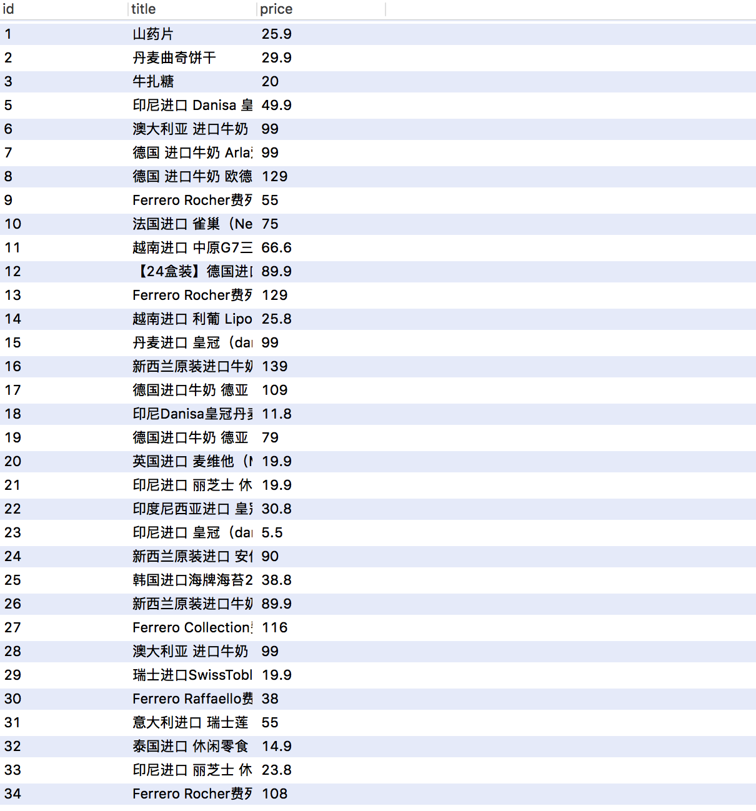

Python爬虫京东商品列表
|当我开发一个后台Node的时候，插入数据库多麻烦了，想到的是可以利用Python爬虫商品列表存到MySQL数据库，可以省去了插入数据库的麻烦。
遍历京东商品列表代码如下：
from urllib.request import urlopen
from bs4 import BeautifulSoup #导入库
url = "http://search.yhd.com/c0-0-1003817/mbname-b/a-s1-v4-p1-price-d0-f0-m1-rt0-pid-mid0-color-size-k/?ref=ad.21102_47515303_1";
html = urlopen(url) #请求网址
soup = BeautifulSoup(html, "lxml") #解析网页信息
proPrice = soup.select("p.proPrice em") #抓取价格
pdlink2 = soup.select('p.proName > a') #抓取商品名称
for title,price in zip(pdlink2,proPrice):
title = title.contents[-1] #将列表中的每一个商品信息提取出来
price = price.contents[-1] #将列表中的每一个商品价格提取出来
print("[*] 商品标题:", title) #输出商品标题
print("[*] 商品价格:", price) #输出商品价格
注意的是：用一个zip()函数实现一次遍历
输出商品列表：
[*] 商品标题:
印尼进口 Danisa 皇冠 丹麦 曲奇 454g（新旧包装随机发货） 盒装
[*] 商品价格: 49.90
[*] 商品标题:
澳大利亚 进口牛奶 德运（Devondale） 全脂牛奶 1L*10 整箱装
......
建一个列表
data = [] # 建一个列表，用于存放数据
填入列表
data.append([title,price]) ##将爬取的数据依次填入列表中
print(data) ##输出
打印出结果
[['\n印尼进口 Danisa 皇冠 丹麦 曲奇 454g（新旧包装随机发货） 盒装\n', '49.90\n']]
[['\n澳大利亚 进口牛奶 德运（Devondale） 全脂牛奶 1L*10 整箱装\n', '99.00\n']]
但是需要移除
\n,可以通过正则表达式和替换方法
# 正则表达式
dr = re.compile(r'\n|',re.S)
# 正则的替换
dd_title = dr.sub('', title)
dd_price = dr.sub('', price)
# 移除空格
dd_s_title = dd_title.strip()
dd_s_price = dd_price.strip()
要修改填入列表
data.append([dd_s_title,dd_s_price]) ##将爬取的数据依次填入列表中
print(data) ##输出
打印输入查看
[['印尼进口 Danisa 皇冠 丹麦 曲奇 454g（新旧包装随机发货） 盒装', '49.90']]
[['澳大利亚 进口牛奶 德运（Devondale） 全脂牛奶 1L*10 整箱装', '99.00']]
这样正常OK了
要增加mysql导入库
import mysql.connector
连接mysql数据库，要先设置好用户、密码和数据库名称
#连接mysql数据库
conn = mysql.connector.connect(user='root', password='root', database='mynode')
#使用cursor()方法获取操作游标
cur = conn.cursor()
然后抓取内容批量插入到goods表
向goods表(title,price)插入数据
sql = "INSERT INTO goods (title,price) values(%s,%s)" # 这是一条sql插入语句
这样就包含了两条数据，通过executemany插入
cur.executemany(sql, data) # 执行sql语句，并用executemany()函数批量插入数据库中
conn.commit()
注意的是如果没有python异常处理，可能无法存到数据库。要加上try...except.
try:
title = title.contents[-1] #将列表中的每一个商品信息提取出来
price = price.contents[-1] #将列表中的每一个商品价格提取出来
...
conn.commit()
except Exception as e:
print(e)
conn.rollback()
插入OK就关闭数据库
# 释放数据连接
if cur:
cur.close()
if conn:
conn.close()
完整项目
# -*- coding: utf-8 -*-
#---------------------------------------
# 程序：商品爬虫
# 版本：0.0.2
# 作者：woaitianwen
# 日期：2018-2-3
# 语言：Python 3.6
# 操作：输入网址后就获取商品列表，然后存到mysql数据库
#---------------------------------------
from urllib.request import urlopen
from bs4 import BeautifulSoup
import mysql.connector
#连接mysql数据库
conn = mysql.connector.connect(user='root', password='root', database='mynode')
#使用cursor()方法获取操作游标
cur = conn.cursor()
url = "http://search.yhd.com/c0-0-1003817/mbname-b/a-s1-v4-p1-price-d0-f0-m1-rt0-pid-mid0-color-size-k/?ref=ad.21102_47515303_1";
html = urlopen(url) #请求网址
soup = BeautifulSoup(html, "lxml") #解析网页信息
proPrice = soup.select("p.proPrice em") #抓取价格
pdlink2 = soup.select('p.proName > a') #抓取商品名称
for title,price in zip(pdlink2,proPrice):
data = [] # 建一个列表，用于存放数据
try:
title = title.contents[-1] #将列表中的每一个商品信息提取出来
price = price.contents[-1] #将列表中的每一个商品价格提取出来
# 正则表达式
dr = re.compile(r'\n|',re.S)
# 正则的替换
dd_title = dr.sub('', title)
dd_price = dr.sub('', price)
# 移除空格
dd_s_title = dd_title.strip()
dd_s_price = dd_price.strip()
#print("[*] 商品标题:", title) #输出商品标题
#print("[*] 商品价格:", price) #输出商品价格
data.append([dd_s_title,dd_s_price]) ##将爬取的数据依次填入列表中
print(data)
sql = "INSERT INTO goods (title,price) values(%s,%s)" # 这是一条sql插入语句
cur.executemany(sql, data) # 执行sql语句，并用executemany()函数批量插入数据库中
conn.commit()
except Exception as e:
print(e)
conn.rollback()
# 释放数据连接
if cur:
cur.close()
if conn:
conn.close()
插入成功数据库效果
